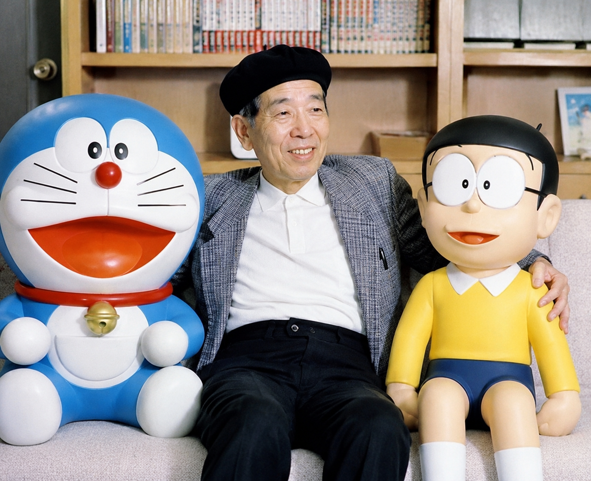

About Doraemon

Doraemon is a famous Japanese manga and anime series created by Fujiko F. Fujio. First published in 1969, it tells the story of a robotic cat from the 22nd century who travels back in time to help Nobita Nobi with his futuristic gadgets. The original manga ended in 1996. With its themes of friendship, family, adventure, and kindness, Doraemon has become a beloved character around the world and an important part of Japanese popular culture.